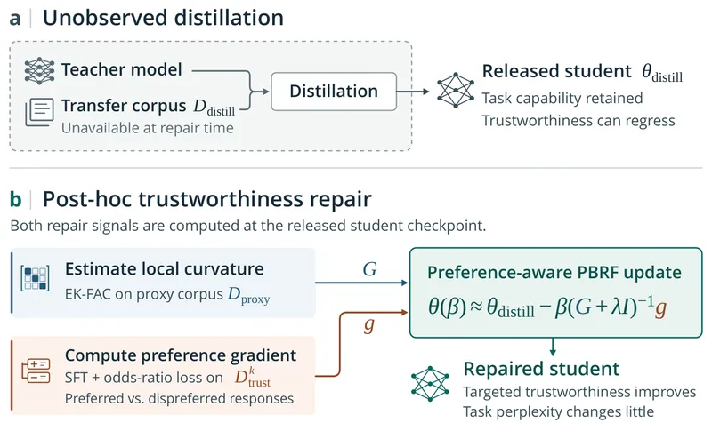

Repairing the trustworthiness of distilled language models
A compressed model can retain its teacher’s language ability while losing some of its truthfulness. We used text from a similar domain to guide a targeted repair when the original distillation corpus was unavailable.
I proposed using EK-FAC to estimate curvature and designed the evaluation across pre-training and post-training distillation settings.
Method and results
We used a proximal Bregman response objective with a preference log-odds loss. I compared proxy corpora and measured both the targeted behavior and held-out perplexity across GPT-2 and Qwen students.
For Qwen 1.2B, the machine-ethics log-odds metric rose 8.48% over the distilled baseline while perplexity moved from 31.56 to 31.67. The trade-off varied by model. One GPT-2 setting had a 1.56% perplexity change.
